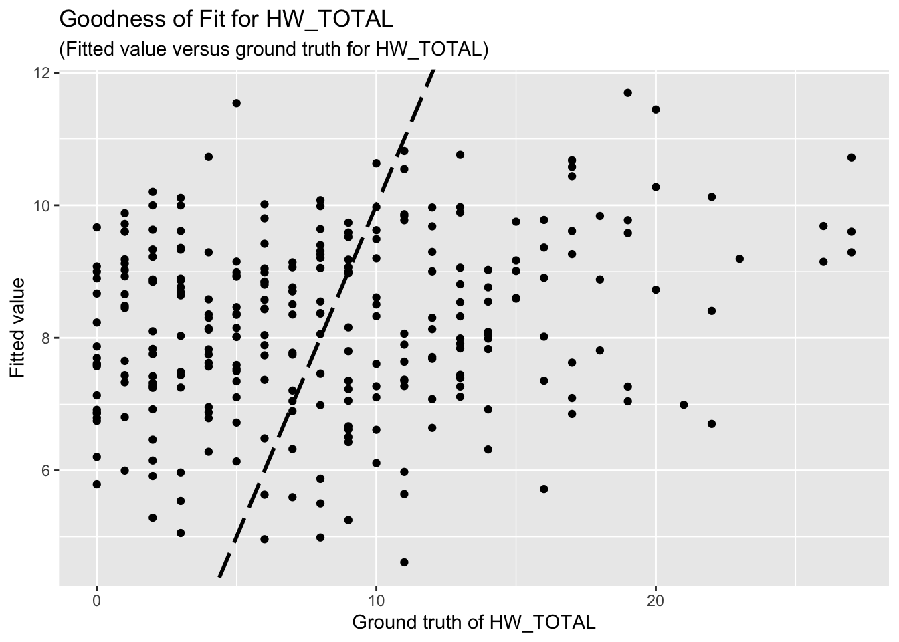

Last updated: 2025-03-03
Checks: 7 0
Knit directory: QUAIL-Mex/
This reproducible R Markdown analysis was created with workflowr (version 1.7.1). The Checks tab describes the reproducibility checks that were applied when the results were created. The Past versions tab lists the development history.
Great! Since the R Markdown file has been committed to the Git repository, you know the exact version of the code that produced these results.
Great job! The global environment was empty. Objects defined in the global environment can affect the analysis in your R Markdown file in unknown ways. For reproduciblity it’s best to always run the code in an empty environment.
The command set.seed(20241009) was run prior to running
the code in the R Markdown file. Setting a seed ensures that any results
that rely on randomness, e.g. subsampling or permutations, are
reproducible.
Great job! Recording the operating system, R version, and package versions is critical for reproducibility.
Nice! There were no cached chunks for this analysis, so you can be confident that you successfully produced the results during this run.
Great job! Using relative paths to the files within your workflowr project makes it easier to run your code on other machines.
Great! You are using Git for version control. Tracking code development and connecting the code version to the results is critical for reproducibility.
The results in this page were generated with repository version 06b5276. See the Past versions tab to see a history of the changes made to the R Markdown and HTML files.
Note that you need to be careful to ensure that all relevant files for
the analysis have been committed to Git prior to generating the results
(you can use wflow_publish or
wflow_git_commit). workflowr only checks the R Markdown
file, but you know if there are other scripts or data files that it
depends on. Below is the status of the Git repository when the results
were generated:
Ignored files:
Ignored: .DS_Store
Ignored: .RData
Ignored: .Rhistory
Ignored: .Rproj.user/
Unstaged changes:
Modified: QUAIL-Mex.Rproj
Note that any generated files, e.g. HTML, png, CSS, etc., are not included in this status report because it is ok for generated content to have uncommitted changes.
These are the previous versions of the repository in which changes were
made to the R Markdown (analysis/Regression-Analysis.Rmd)
and HTML (docs/Regression-Analysis.html) files. If you’ve
configured a remote Git repository (see ?wflow_git_remote),
click on the hyperlinks in the table below to view the files as they
were in that past version.
| File | Version | Author | Date | Message |
|---|---|---|---|---|
| Rmd | 06b5276 | Junhui He | 2025-03-03 | Create a regression analysis report |
The research project QUAIL-Mex investigates the relationship between perceived water insecurity, psychological stress, and biological markers of stress among adult women. In this report, we focus on the dependencies between HW_TOTAL, PSS_TOTAL and some predictors of interest. Specifically, we run two linear regression models as follows:
HW_TOTAL ~ D_AGE + D_HH_SIZE + D_CHLD + HLTH_SMK + HLTH_CPAIN_CAT + HLTH_CDIS_CAT + SES_SC_Total
PSS_TOTAL ~ D_AGE + D_HH_SIZE + D_CHLD + HLTH_SMK + HLTH_CPAIN_CAT + HLTH_CDIS_CAT + SES_SC_Total
We remove rows with missing data.
HW_TOTAL is calculated by adding up all the HWISE scores; PSS_TOTAL is calculated by adding up PSS 1,2,3, 8, 11, 12, 14, and substracting 4,5,6,7,9,10, and 13.
The regression results for HW is summarized as follows.
Call:
lm(formula = HW_TOTAL ~ D_AGE + D_HH_SIZE + D_CHLD + HLTH_SMK +
HLTH_CPAIN_CAT + HLTH_CDIS_CAT + SES_SC_Total, data = reg_dataset)
Residuals:
Min 1Q Median 3Q Max
-9.6661 -4.4176 -0.7606 3.8845 17.7116
Coefficients:
Estimate Std. Error t value Pr(>|t|)
(Intercept) 14.382856 2.097087 6.858 4.99e-11 ***
D_AGE -0.107514 0.054957 -1.956 0.0515 .
D_HH_SIZE -0.082722 0.103845 -0.797 0.4264
D_CHLD 0.127345 0.352781 0.361 0.7184
HLTH_SMK 0.135179 0.983496 0.137 0.8908
HLTH_CPAIN_CAT 0.783988 0.883577 0.887 0.3757
HLTH_CDIS_CAT 1.209758 1.091790 1.108 0.2689
SES_SC_Total -0.021450 0.008669 -2.474 0.0140 *
---
Signif. codes: 0 '***' 0.001 '**' 0.01 '*' 0.05 '.' 0.1 ' ' 1
Residual standard error: 6.007 on 262 degrees of freedom
Multiple R-squared: 0.04891, Adjusted R-squared: 0.0235
F-statistic: 1.925 on 7 and 262 DF, p-value: 0.06595The goodness-of-fit for HW regression is given as follow.

The regression results for PSS is summarized as follows.
Call:
lm(formula = PSS_TOTAL ~ D_AGE + D_HH_SIZE + D_CHLD + HLTH_SMK +
HLTH_CPAIN_CAT + HLTH_CDIS_CAT + SES_SC_Total, data = reg_dataset)
Residuals:
Min 1Q Median 3Q Max
-18.302 -4.873 -0.352 5.101 17.827
Coefficients:
Estimate Std. Error t value Pr(>|t|)
(Intercept) 2.405322 2.579522 0.932 0.3520
D_AGE -0.156576 0.067600 -2.316 0.0213 *
D_HH_SIZE -0.079564 0.127735 -0.623 0.5339
D_CHLD 0.629308 0.433938 1.450 0.1482
HLTH_SMK 0.164630 1.209749 0.136 0.8919
HLTH_CPAIN_CAT 0.597392 1.086844 0.550 0.5830
HLTH_CDIS_CAT 2.662062 1.342956 1.982 0.0485 *
SES_SC_Total 0.002218 0.010663 0.208 0.8354
---
Signif. codes: 0 '***' 0.001 '**' 0.01 '*' 0.05 '.' 0.1 ' ' 1
Residual standard error: 7.389 on 262 degrees of freedom
Multiple R-squared: 0.03445, Adjusted R-squared: 0.008653
F-statistic: 1.335 on 7 and 262 DF, p-value: 0.2337The goodness-of-fit for PSS regression is given as follow.
Is it reasonable to use HW_TOTAL or PSS_TOTAL as response variables and other aforementioned variables as predictors? If not, how should I choose response variables and predictors?
Previously, I mentioned feature selection, a method used to identify the most influential variables among a set of predictors. Here, “the most influential variable” refers to one that has a significant impact on the response. However, since your cleaned dataset contains only eight predictors, I believe feature selection is unnecessary. Moreover, feature selection is typically employed to prevent overfitting, whereas our primary problem is underfitting.
4.1 Comments on results
Unfortunately, the coefficient estimates are not significant except for a few predictors. This indicates the linear dependency between the response (HW_TOTAL or PSS_TOTAL) and the predictors are not significant.
Based on the goodness-of-fit figures, the predictive performance is really bad, which is consistent with the last comment.